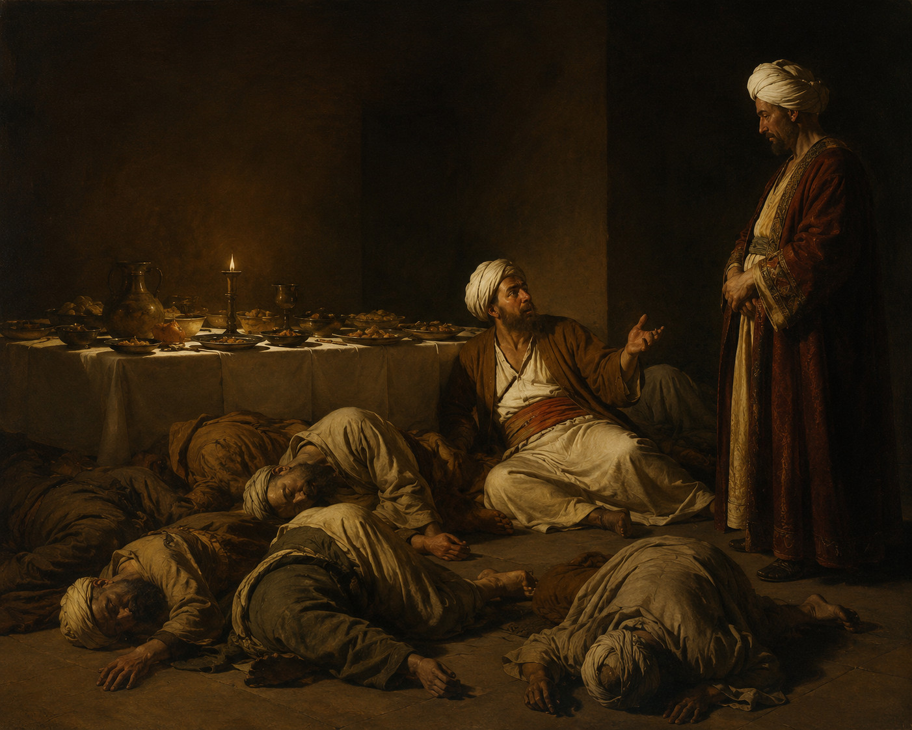

Le dernier soufi

Un riche Turc voulant faire une bonne action accueillit sept soufis sous son toit.
Chaque jour, il leur faisait préparer des mets délicats.
Les invités remerciaient poliment, mais retournaient à leur méditation sans toucher à la nourriture.
Un matin, il fit dresser un véritable festin, ordonna à tous ses serviteurs de quitter la demeure et se dissimula derrière une cloison, d’où il pouvait les observer.
À peine les soufis se crurent-ils seuls qu'ils se ruèrent sur les plats.
Ils mangèrent avec une telle frénésie que l'un d'eux s'effondra.
Les autres continuèrent à engloutir les plats, indifférents à son sort.
Puis un second tomba, puis un troisième, jusqu'à ce qu'il n'en reste plus qu'un, vautré au milieu des plats vides, se léchant les doigts.
Le maître sortit alors de sa cachette.
— Le repas vous a-t-il satisfait ?
— Oui, mais s’il y en avait eu un peu plus, je serais mort moi aussi.
Conte librement adapté d'un récit attribué à Saheb Zamani.
Adaptation : Frodric
Soufi : personne qui cherche à se rapprocher de Dieu par la prière, la méditation et une vie simple.
Mets : plats préparés pour un repas.
Festin : grand repas très abondant.
Demeure : grande maison.
Se dissimuler : se cacher.
Cloison : paroi qui sépare deux pièces.
Frénésie : agitation ou enthousiasme excessif, difficile à contrôler.
S'effondrer : tomber brusquement, souvent parce qu'on n'a plus de forces.
Engloutir : manger très vite et en très grande quantité.
À propos de ce conte
Cette histoire est reprise par Jean-Claude Carrière dans Le Cercle des menteurs, qui l'attribue à Saheb Zamani, sans préciser la source exacte.
Malgré des recherches, aucune version plus ancienne n'a pu être retrouvée. Le conte ne figure pas dans les grands recueils classiques de récits soufis et ne semble pas avoir été largement diffusé en dehors de cette publication.
Il est possible qu'il provienne de la tradition orale iranienne et qu'il ait été recueilli par Saheb Zamani avant d'être adapté par Jean-Claude Carrière.
À ce jour, cette hypothèse n'a toutefois pas pu être confirmée.
Échos
Cette histoire vous en a-t-elle rappelé une autre ? Vous pouvez me la raconter ici.